CIPER
CIPERIFMG Campus Ouro Preto
Sede do CIPER, em terreno da União no campus. O Centro se vincula à Diretoria de Pesquisa, Inovação e Pós-Graduação (DPIPG) do campus, que apresenta a proposta.
Ouro Preto · Minas Gerais · Brasil
O Centro de Inovação e Pesquisa de Energias Renováveis de Ouro Preto (CIPER) é uma proposta do IFMG Campus Ouro Preto, como Centro de Excelência do Parque Tecnológico do IFMG, para converter o legado da mineração em conhecimento, energia limpa e novas oportunidades para a região.
O que é o CIPER
O CIPER nasce dentro do IFMG, como Centro de Excelência do Parque Tecnológico do IFMG, com sede no Campus Ouro Preto. É um catalisador para quem faz ciência em energias renováveis.
O foco é usar a expertise histórica de Ouro Preto em mineração e metalurgia para acelerar a transição à economia verde, fortalecer a pesquisa, o ensino e a extensão do IFMG e servir à comunidade — preenchendo uma lacuna na inovação em energias renováveis e na preservação das nascentes do Rio Doce e do Rio das Velhas, que ficam em Ouro Preto.
Da “economia de exaustão” à “economia do conhecimento”.
O Centro será implantado no Campus Ouro Preto do IFMG, na Zona de Desenvolvimento Educacional (ZDE) do Morro do Cruzeiro.
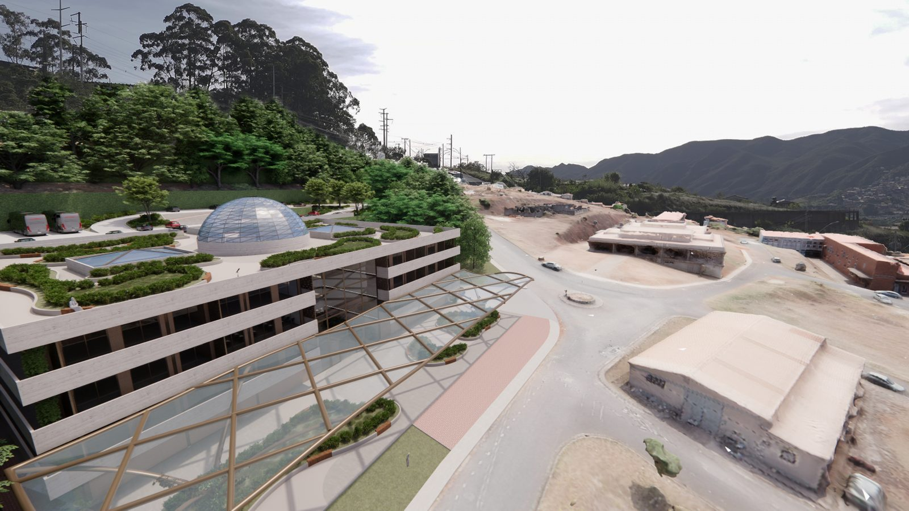
Metas do projeto
Metas da proposta do CIPER (2025–2026).
O CIPER no IFMG
A Resolução CONSUP nº 42/2025 instituiu o Parque Tecnológico Distribuído do IFMG e previu os Centros de Excelência entre as suas unidades. O CIPER é proposto como um deles, com sede e gestão no Campus Ouro Preto.
Sede do CIPER, em terreno da União no campus. O Centro se vincula à Diretoria de Pesquisa, Inovação e Pós-Graduação (DPIPG) do campus, que apresenta a proposta.
Rede de inovação que abrange os campi do IFMG. O seu Conselho de Administração aprova os novos Centros de Excelência, e o CIPER se vincula a ele.
O Comitê Técnico-Científico reúne pesquisadores do IFMG e pesquisadores colaboradores de outras instituições, que apoiam as linhas de pesquisa do Centro.
O CIPER poderá firmar acordos de cooperação, convênios e parcerias com instituições públicas e privadas, nacionais e estrangeiras, nos termos das normas do IFMG.
Instâncias de aprovação patrimonial e de cessão de uso do terreno: IPHAN e SPU (Secretaria de Patrimônio da União).
Três pilares · quinze objetivos
Gerar conhecimento, formar pessoas e transformar a economia regional. Cada objetivo tem estratégia e meta próprias.
Gerar conhecimento e tecnologia de ponta em energias limpas.
Formar o capital humano do futuro, em todos os níveis.
Programa Portas Abertas: 40% da capacidade do museu e dos laboratórios didáticos reservada à rede pública de Ouro Preto e região.
Diversificar a economia e engajar a comunidade.
60 eventos comunitários em 5 anos e um conselho consultivo comunitário de 15 membros.
Projeto arquitetônico
O edifício segue as curvas do Morro do Cruzeiro, dialoga com o conjunto histórico e é, ele mesmo, um laboratório de sustentabilidade.
| Local | Zona de Desenvolvimento Educacional (ZDE), Campus Ouro Preto do IFMG, no Morro do Cruzeiro, junto à portaria principal do campus |
| Área total | 9.000,80 m² (projeto de 10/12/2024) |
| Uso | Inovação, pesquisa em energias renováveis e sustentabilidade ambiental, econômica e social |
| Espaços | Laboratórios de pesquisa e inovação, laboratórios interativos, Museu Interativo de Ciência, Planetário, Pêndulo de Foucault, auditórios, biblioteca científica, espaço gastronômico sustentável |
| Materiais | Aço carbono A36, aço inox A304, tijolo à vista, vidro temperado e pedra |
| Sustentabilidade | Painéis solares, reúso de água da chuva, jardim suspenso com espécies da Mata Atlântica, meta LEED Ouro |
| Acessibilidade | Rampas, elevadores e caminhos sinalizados em todos os níveis |
| Método | BIM 5D (geometria, tempo e custo) com gêmeo digital entregue ao IFMG |
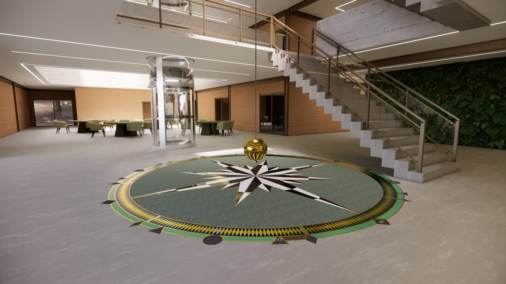
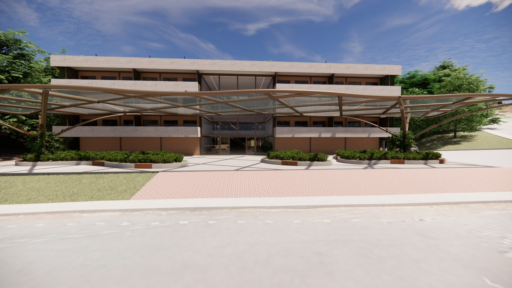
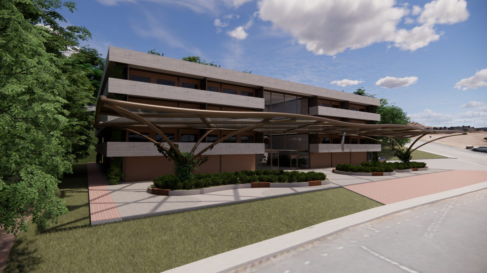
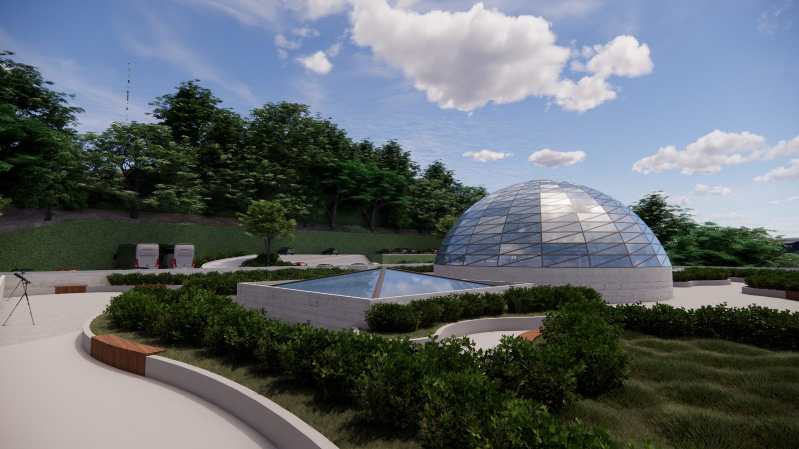
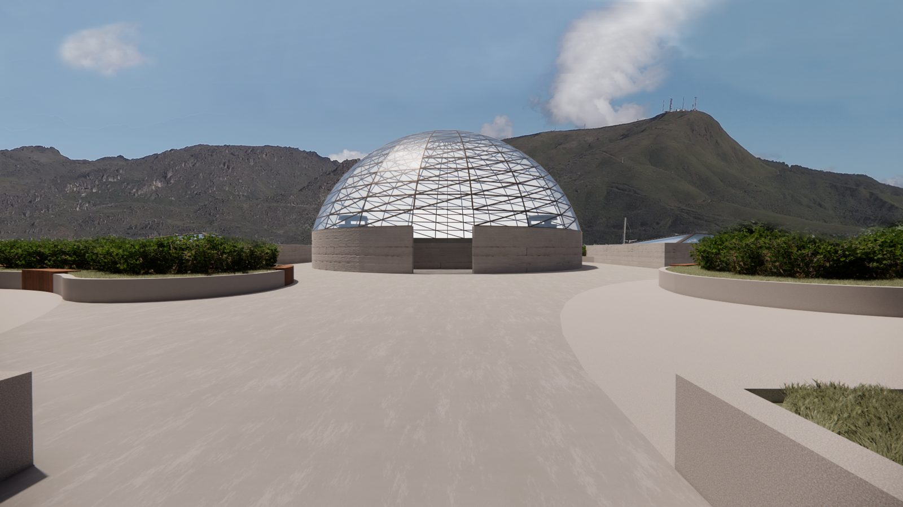
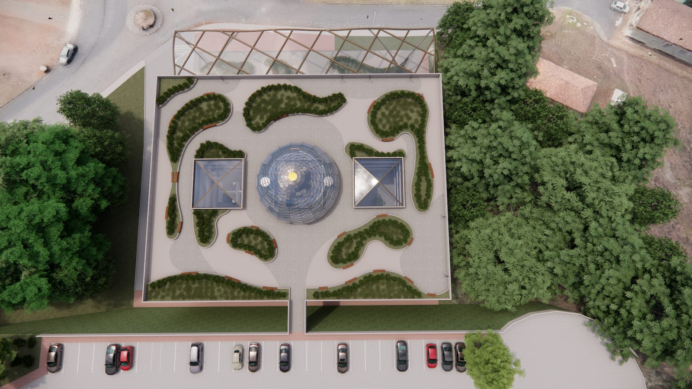
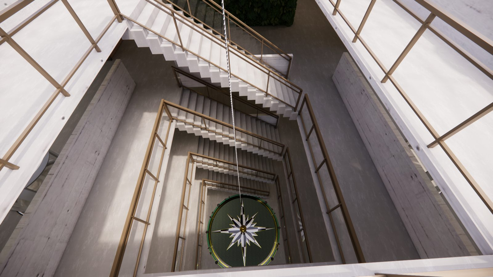
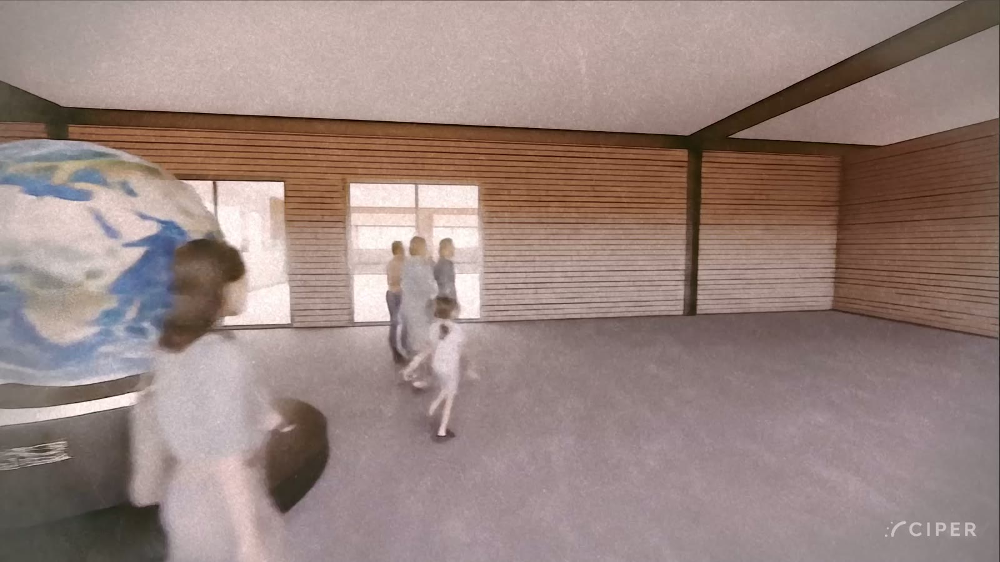
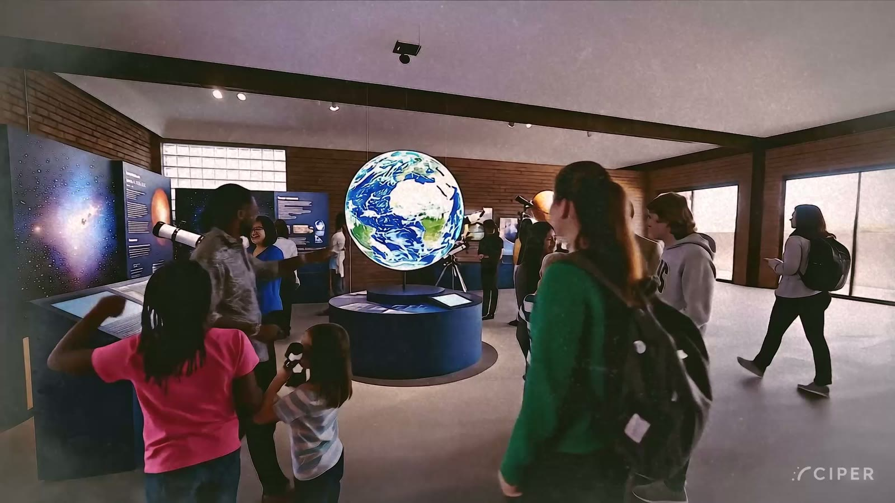
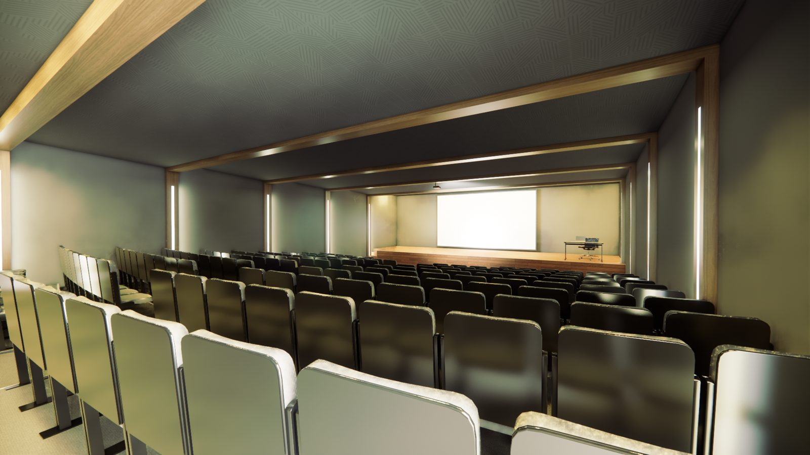
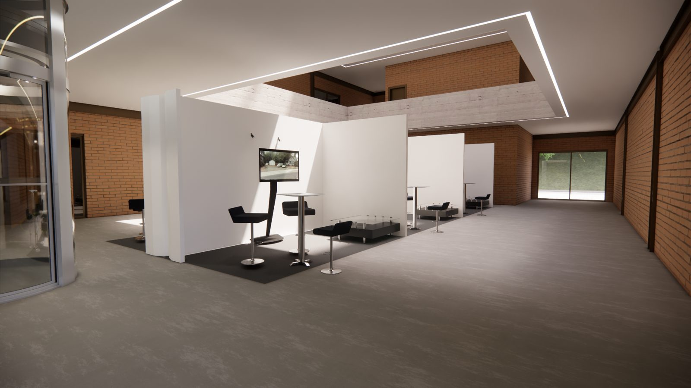
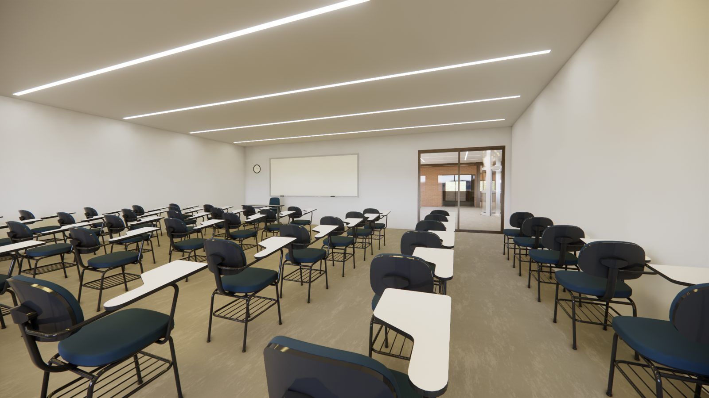
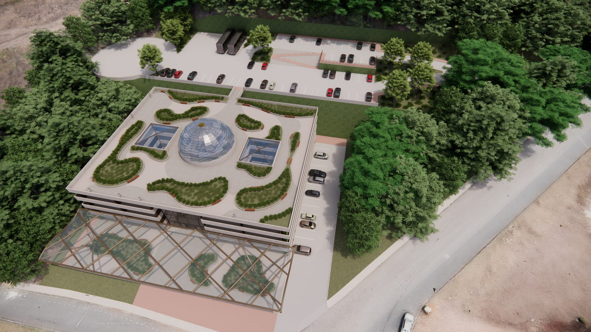
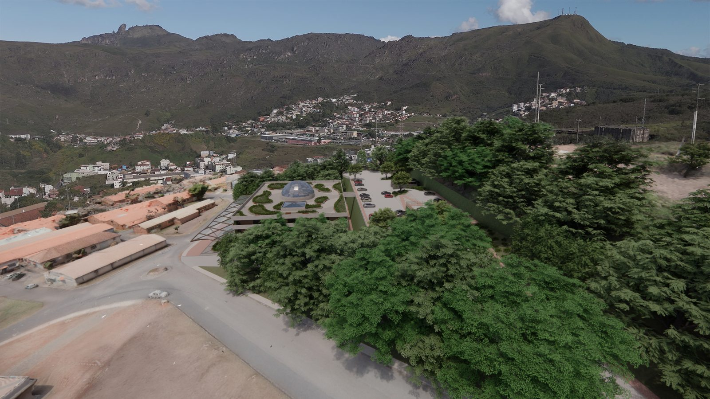
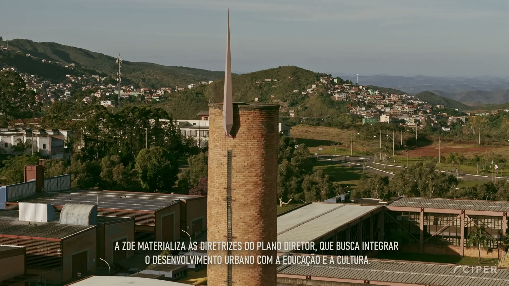
Vídeo institucional
Em 9 minutos: a corrida do ouro, a vocação educacional de Ouro Preto, a ZDE do Morro do Cruzeiro e o passeio pelo edifício do CIPER.
Arquitetura que ensina, história que inspira, educação que transforma.
Roteiro: Ernani Carlos de Araujo, Julio Cesar Silva Azevedo, Lídia Barbosa, Matheus Garcia e Pablo Morais · 3D, archviz e produção audiovisual: Studio lap.s · Imagens aéreas: Vellozia Filmes · Narração, edição e mixagem: Pablo Morais · Outubro de 2025.
Governança
A proposta de Regimento Interno prevê quatro instâncias. O CIPER se vincula à DPIPG do Campus Ouro Preto e presta contas ao Parque Tecnológico do IFMG.
Servidor do Campus Ouro Preto designado pelo Reitor, por indicação do Diretor-Geral. Planeja, coordena, gere os recursos e representa o CIPER.
Coordenação Geral, DPIPG do campus e Parque Tecnológico do IFMG. Aprova o plano de trabalho e acompanha a sua execução; poderá incluir representantes de instituições conveniadas.
Pesquisadores do IFMG e pesquisadores colaboradores de outras instituições. Define as linhas de pesquisa e avalia os projetos.
Comunidade, setor produtivo e rede pública de ensino. Orienta a extensão e a divulgação científica.
Relatório anual de atividades e de indicadores à DPIPG do campus e à Diretoria Executiva do Parque Tecnológico do IFMG.
Cotas Ouro (edifício), Alumínio (laboratórios) e Ferro (museu, planetário e bolsas), só para empresas com metas comprovadas de descarbonização.
Lei de Inovação (Lei nº 10.973/2004), Resolução CONSUP nº 42/2025 e Lei nº 8.958/1994 para a gestão de recursos externos por fundação de apoio; cessão de uso junto à SPU e defesa arquitetônica junto ao IPHAN.
Roteiro
Caminho proposto à DPIPG do Campus Ouro Preto. A consulta oficial é que define o trâmite e as datas.
| Etapa | Quem | Quando |
|---|---|---|
| 1 · Abertura do processo no SEI, com as minutas do ato de criação e do regimento | DPIPG do Campus Ouro Preto | novembro de 2026 |
| 2 · Apreciação no campus | Diretor-Geral, assessorado pelo Conselho Acadêmico | novembro de 2026 |
| 3 · Análise na Reitoria e enquadramento no Parque Tecnológico | Pró-Reitoria de Inovação, Pesquisa e Pós-Graduação | dezembro de 2026 |
| 4 · Aprovação da resolução de criação, com o regimento anexo | Conselho de Administração do Parque e Conselho Superior | dezembro de 2026 |
| 5 · Publicação e designação da Coordenação Geral | Reitor | dezembro de 2026 |
Depois da criação, os acordos de cooperação com outras instituições seguem as normas do IFMG.
Criação do CIPER no IFMG, plano de trabalho e captação dos recursos iniciais.
Execução do projeto arquitetônico sustentável e formação das equipes iniciais de pesquisa e gestão.
Inauguração e início dos programas de P&D, Ensino e Extensão. Meta: as 5 primeiras patentes.
Metas de visitação, empregos e startups; certificação LEED Ouro e 3 parcerias internacionais.
| Marco | Entrega técnica | % do valor | Prazo |
|---|---|---|---|
| M1 · Mobilização | Levantamentos topográficos, sondagens e canteiro | 15% | Mês 1 |
| M2 · Fundações | Fundações e infraestrutura enterrada | 20% | Mês 3 |
| M3 · Superestrutura | Estrutura metálica e fechamentos externos | 30% | Mês 6 |
| M4 · Instalações | Redes elétricas, hidráulicas, H2V e climatização | 20% | Mês 9 |
| M5 · Acabamentos | Equipamentos, laboratórios e paisagismo | 10% | Mês 11 |
| M6 · Comissionamento | Testes finais, certificação LEED e entrega | 5% | Mês 12 |
Fundo de contingência de 12% sobre o valor da obra para absorver oscilações de insumos como aço e vidro.
Construção coletiva
A proposta é apresentada no IFMG e ajustada a cada escuta.
Capital humano e massa crítica
Professores, pesquisadores e servidores técnicos do IFMG Campus Ouro Preto, com pesquisadores colaboradores de outras instituições, são a base do CIPER.
O Banco de Capital Humano organiza esse mapa — quem é, onde está, em que área atua e com quais eixos do CIPER tem afinidade — e recebe a adesão de quem quiser participar.
Primeira carga: dados públicos dos sites oficiais das unidades, coletados em 9 de novembro de 2026.